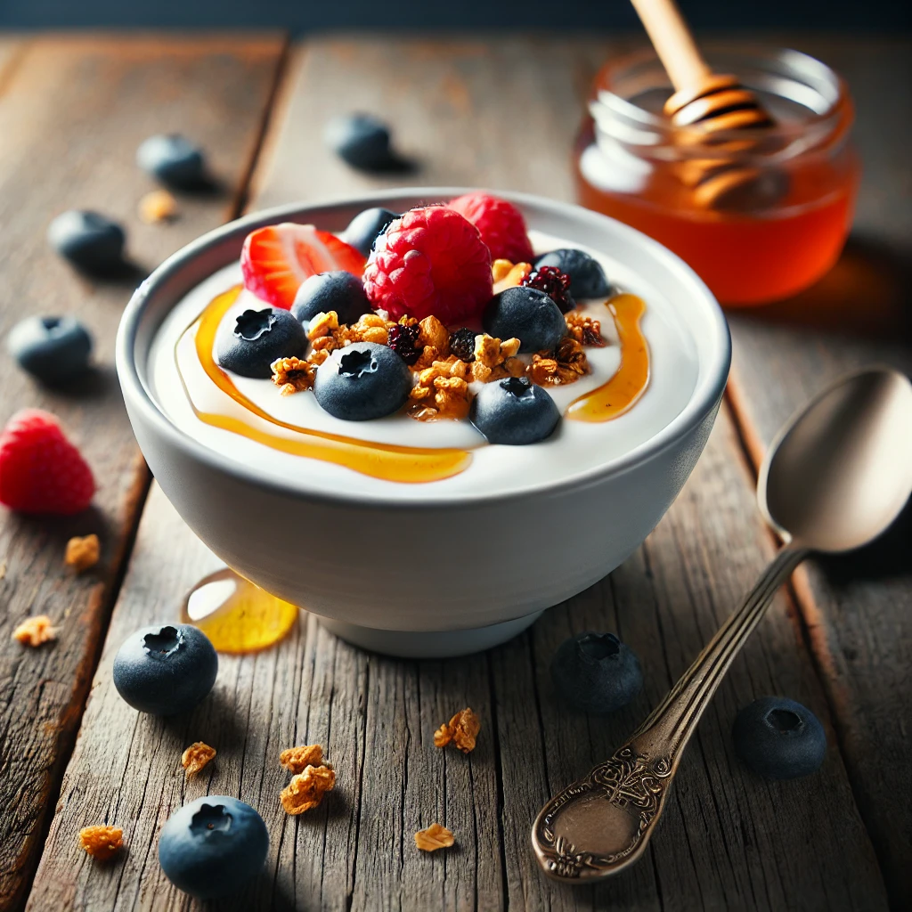

Description
This refreshing and satisfying breakfast or snack features creamy Greek yogurt topped with fresh, juicy berries, a drizzle of honey, and a sprinkle of crunchy granola. It's a perfect balance of sweetness and texture, delivering a high-protein punch to keep you full and energized.
Ingredients
- 1 cup Greek yogurt
- 1/2 cup mixed berries (strawberries, blueberries, raspberries)
- 1 tablespoon honey
- 1/4 cup granola
Steps
- Spoon the Greek yogurt into a bowl.
- Top with mixed berries.
- Drizzle honey over the berries.
- Sprinkle granola on top.
- Serve immediately and enjoy!